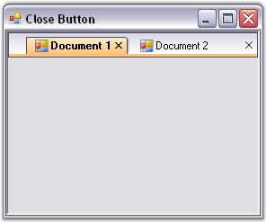
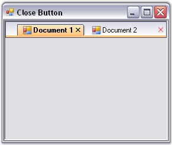

On setting the CloseButtonVisible property, the close button will be either visible or hidden.
Enabling the ShowCloseButtonForActiveTabOnly property will display the close button for the active tab only and ShowCloseButton property will display the close button for all the tabs.
The close button for individual tabs can also be displayed by implementing the below code snippet.
|
[C#]
//Individual Close Buttons enabled. this.tabbedMDIManager.ShowCloseButton = true;
//Close Buttons for Active Tabs only. this.tabbedMDIManager.ShowCloseButtonForActiveTabOnly = true;
//Close Button can be made visible. this.tabbedMDIManager.CloseButtonVisible = true; |
|
[VB.NET]
' Individual Close Buttons enabled. Me.tabbedMDIManager.CloseButtonVisible = True
' Close Buttons for active Tabs only. Me.tabbedMDIManager.ShowCloseButtonForActiveTabOnly = True
' Close Button can be made visible. Me.tabbedMDIManager.ShowCloseButton = True |

Figure 1088: Close Button Shown for Active Tabs
The color of the close button at the extreme right of the MDI TabStrip can be changed using the CloseButtonColor property.
|
[C#]
this.tabbedMDIManager.CloseButtonColor = Color.Red; |
|
[VB.NET]
Me.tabbedMDIManager.CloseButtonColor = Color.Red |

Figure 1089: CloseButtonColor = "Red"
Middle Mouse Button
The tabs can be closed by clicking the middle mouse button on enabling the CloseOnMiddleButtonClick property.
This functionality can also be added using the code snippet given below.
|
[C#]
this.tabbedMDIManager.CloseOnMiddleButtonClick = true; |
|
[VB.NET]
Me.tabbedMDIManager.CloseOnMiddleButtonClick = True |